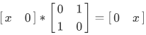

Coeffect
Type and Effect Systems
程序运行过程中会产生一些effect，典型比如各种side effect。
一个函数的Type只能描述计算的结果的类型，而无法描述计算过程中会发生什么。
Effect system是Type system的扩展。
可以跟踪异常，资源使用，内存分配情况等。
Monad vs Effect System
monad的问题是多种monad组合的时候非常麻烦。需要程序员自己维护一个monad stack，每次操作都要通过lift将操作的函数提升到最外层的类型。
Effect System的组合性要好很多，而且可以自动将操作提升到需要的类型。
Context
Context不但在自然语言里面很重要，在逻辑和编程语言里面也同样重要。
对于一个open term来说，Context提供其中的自由变量的值。
比如lambda calculus里的context。
Coeffect System
跟Effect System相反，Coeffect是关于Contex属性的。
本来想看linear logic相关的type system的。
但是感觉这些东西有点trivial，没什么启发性，所以看到一半放弃了。
深度学习
国庆在家看了吴恩达机器学习的课程，没事看着玩的。课讲的确实非常好，深入浅出。虽然不做深度学习，但是看完之后还是有一些收获的：
- 用浮点数来处理离散问题。比如课程例子里的识别手写的数字。并不是输入图片，输出直接就是识别到的数字。输出的其实是图片对应0-9这十个数字的概率，是十个浮点数。
- 超大规模的线性回归。线性回归这个想法其实还挺简单的，拿到一批数据之后，很自然的就想做个拟合，外延一下，看是不是能预测一些东西出来。我觉得这近乎是人的本能的想法。其实算卦就有这样的思路在里面。数据分析，数据挖掘也是很早之前就有的。我早年间也尝试过利用这些技术做点东西。但是那时比较粗糙，就像算卦一样，试试这个，不行就再试试那个，主要还是人在定方向。这次看到现在的深度学习，其规模真的是吓了我一跳。课程里一个很小的例子，识别手写的数字，随随便便一万多个参数。训练用的测试集也很大，计算量真的超出我的想象。而且计算权重的时候，随随便便就把一堆数字做了平均，让一贯追求精确的我看得牙疼。贫穷限制了我的想象力啊。
- 不可解释性。看课程的时候，很多人在弹幕刷“炼丹系统”。里面确实有很多东西不可解释，但是我个人觉得没什么问题，人的大脑大部分过程也是不可解释的。
- 可组合性。关注这个是因为最近有很多“可微分编程”的文章。不知道现在深度学习系统的可组合性怎么样？可微分编程是否有助于可组合性？我觉得深度学习有点像定理证明。训练过程中计算量大不可怕，反正只训练一次。就像证明数学定理，证明过程多长，多难都没关系，反正只要证明出来，猜想马上变定理，后面就可以直接用了。如果深度学习系统的复用性和可组合性比较好的话，那训练时的计算量大就不是很可怕了。
区块链与量子系统
量子系统具有幺正性，其操作也都会保持这个性质。
区块链也具有类似幺正性的东西，对于比特币来说，总量保持不变。其操作也都会保持这个性质，不然就是非法的交易。
但是，增加了智能合约能力之后，好像打破了这种性质。ERC20可以凭空造币。
但是如果把资产总量记作关于时间的变量 S(t) 。
比如以太币的总量是没有上限的，但是在特定时刻，总量是固定的。
同样，ERC20的代币也可以这样处理，将 t 限定为从合约创建时开始即可。
这样，整个系统就是一些线性系统的叠加。
token不可复制，不会凭空消失，都跟量子系统很像。
不过区块链没有观察者效应，观测并不会对系统产生什么影响。
一些token抵押产生的新的token，就有点像量子纠缠。
如果有多种token同时参与交易（变换），则需要有正交的多个变换处理函数。
如果资产不正交，比如上面说的抵押产生新的token。如果原始token和新的token在同一个交易里出现。
参考机器学习，可以求伪逆矩阵。奇异值分解，就相当于在分析矩阵中行向量间的相关性。
如果这个思路成立，应该可以把合约操作写成矩阵的形式。
比如转账：

这里的变换矩阵就是一个幺正矩阵。
但是目前还没有想好怎么扩展下去。
可验证计算与形式化证明
前段时间在思考可验证计算（零知识证明）与程序的形式化证明之间的关系。
我觉得他们之间存在着相似性。都是把程序映射到某种可以校验的系统中。
零知识证明一般是映射到布尔电路或者算数电路。形式化验证是某种类型系统或者逻辑系统。
他们的难点也一样，都在映射的过程中，如果映射的时候出了问题，那么结果就会存在漏洞。就像软件开发，需求没搞清楚，后续做出来的东西肯定不对。
下午在知乎上回答了一个相关的问题，顺便也梳理了一下思路。
以知乎回答中的例子来说，我们的目标是验证小明会加法运算/函数。但是我们实际校验的却是这个函数在实现之外的一个性质。因为加法的实现可以有很多，但是他们都遵循同样的性质。
反过来说，如果小明是一个猴子打印机，可以随机输出任意代码。我们的校验过程其实是给小明施加了一些约束，让他只能输出实现了加法运算的代码。
从这个角度，跟程序的形式化证明就更相似了。比如编程语言的类型系统，面对的是可以敲出任意代码的程序员，但是类型系统对于不符合某些性质的程序会报错，使得程序员只能写出符合要求的代码。
当然，这里零知识的属性就不是太明显了。
零知识在可验证计算里面重要，是因为验证是唯一的验收条件。所以这个验收条件不能太明显，必须藏起来，否则小明可能会根据这个信息进行欺骗。
比如OJ系统里面的骗分行为，就是因为测试集是唯一的验收条件，所以OJ的测试集都是保密的。如果事后还要答辩，那骗分就没意义了。
同样的，对于编程语言来说，类型系统不是唯一的验收条件。软件能通过编译只是最最基本的要求，后续还有很多验收环节。因此其零知识属性就不是那么重要了。
思考这个问题是因为Cell Model下的合约开发刚好两者都需要。所以就想看看两项工作是否可以合并，或者是否有相互借鉴改进的地方。
目前看，两者很类似，但是侧重点不太一样。
零知识证明因为零知识性的要求，引入了大量重量级的密码学操作，这些开销对于形式化证明来说不是很必要。
反过来，对于形式化证明来说，数字电路，算数电路，可以被看作是一种IR。当然可以把程序翻译到这些IR来做形式化证明，但是相当对于目前的方案，好像没什么特别的优势。
还有一些区别，实际的零知识证明是验证者先有一个函数 f ，然后将其转换为数字电路，然后又从数字电路里整理出一些约束。然后证明者运行的不一定是这个 f ，相当于有一个参考实现的程序的形式化证明。而且这些性质会非常的细，不像形式化证明那么粗。当然类型系统增加了依赖类型等高级的内容之后，应该也可以做到限制的特别死，达到编译通过之后就不用测试的程度。
零知识证明是每次函数 f 运行的时候（有具体的参数值），生成proof数据。
这其实有点像是PCC(Proof-carrying code)，PCD(Proof-carrying data)中 Proof-carrying 的特性。
另外，两者的TCB(Trusted Computing Base)不一样。程序的形式化证明一般认为编程语言的基础设施，比如编译器，Runtime等，是可信的。零知识证明的TCB更小。
其实上面提到的PCC，一个目的就是减小形式化证明的TCB。所以可以认为两者已经在相互借鉴了。